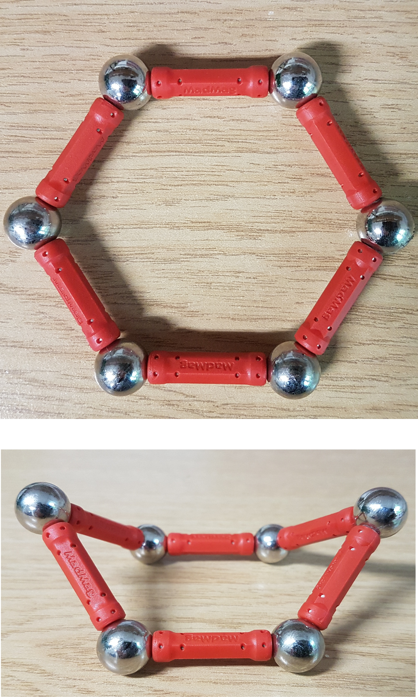
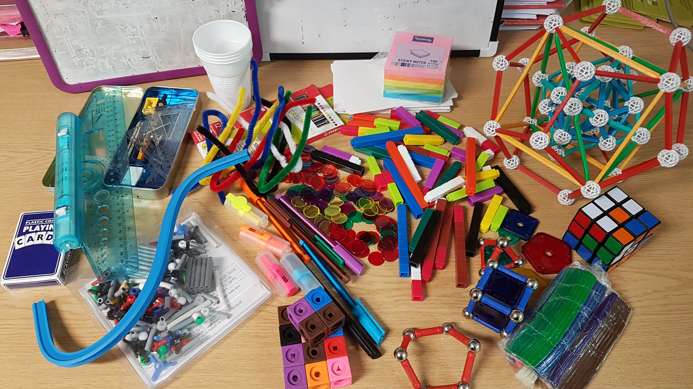
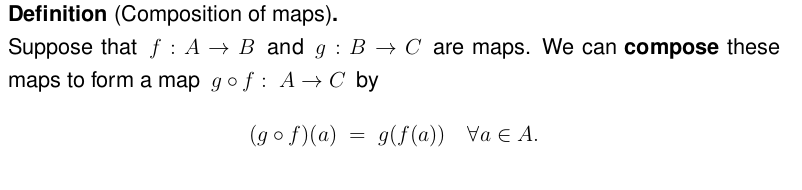
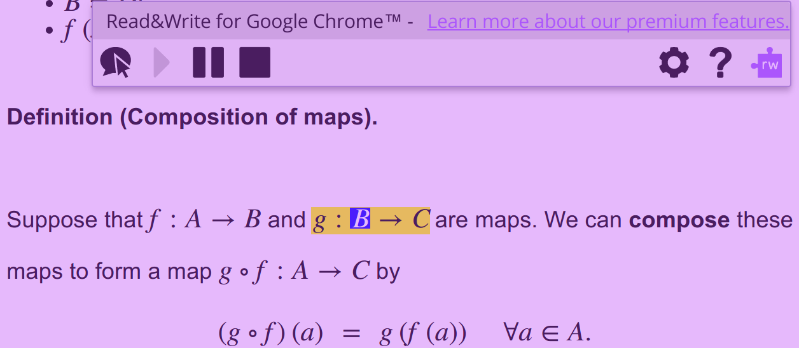
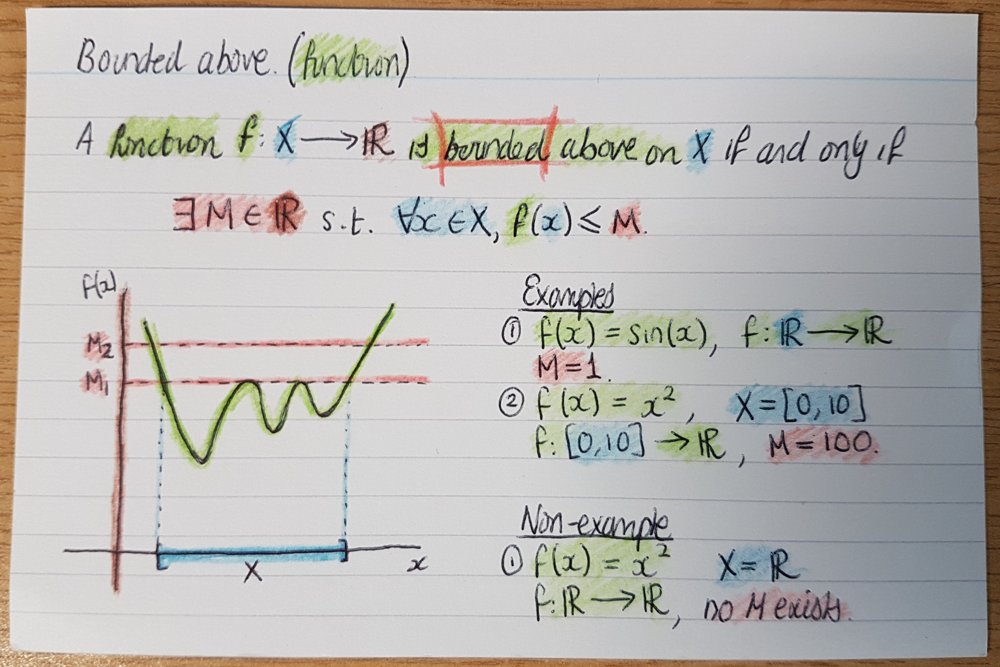
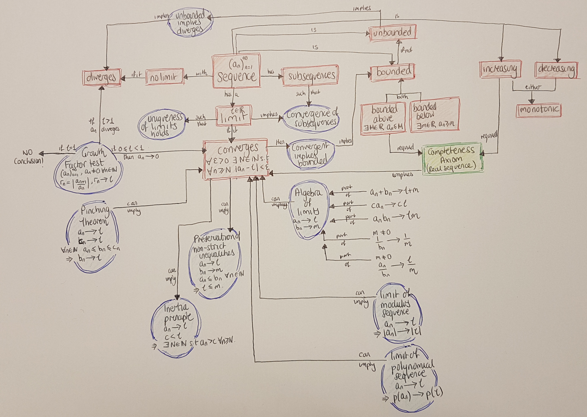
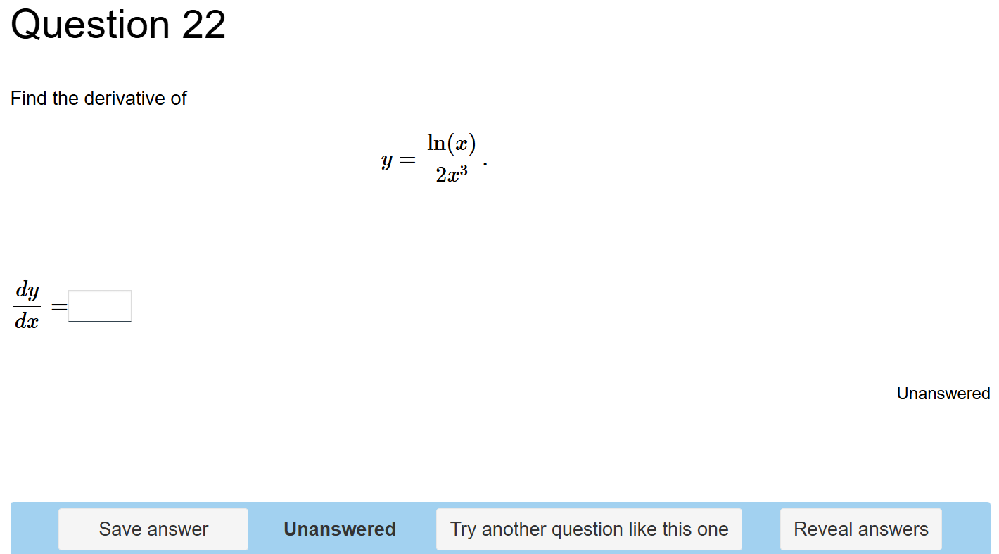

Experiences and Approaches
Maths and statistics support for neurodivergent students
Plan
- Some experience students might have
- Some approaches I’ve used
Some experiences students might have
Joe, an engineer
“I’m having real problems with maths, the other modules have good workbooks”
- Verbal comprehension: superior
- Perceptual reasoning: high average
- Working memory: low average (significantly weak)
- Processing speed: average range (relatively weak)
- Word recognition: below average (significantly weak)
- Writing speed: well below average (significantly weak)
- Writing untidy and difficult to read
Mary, a mathematician
“I feel so stupid, maths is what I have always been good at and now I can’t understand any of it.”
- Verbal comprehension: superior
- Perceptual reasoning: high average
- Working memory: superior
- Processing speed: average range (relatively weak)
- Word recognition: average range (significantly weak)
- Writing speed: average range (relatively weak)
- Writing generally legible and coherent
Ali, a chemist
“I have a student I don’t know how to help … this involves seeing molecules in 3D and determining their symmetry. She finds this particularly difficult and although we made some progress, she became rather distressed through frustration”
- Working memory and processing speed commensurate with her verbal comprehension and perceptual processing skills
- No reading difficulties
- Significantly weak fine motor control
- Difficulties with co-ordination and spatial awareness
Nat, a sports scientist
“She is having significant problems with her maths module”.
Dyscalculia screener suggested difficulties with:
- Comparing relative sizes of numbers (word, symbol and visual-spatial)
- Concepts and inferences about operations on numbers or relationships between them
- Understanding time
Some approaches I’ve used
In the moment
- Multisensory approach with consistent colour and images
- Consistently link symbol, word and process
- Break problems down into small, manageable steps
- Read maths aloud, ‘think’ aloud yourself
- Encourage thinking aloud, act as a scribe if needed
- Use visualisations, concrete examples and concrete objects
- Use flow charts connected to a concrete example
- Use concept maps to highlight relationships and connections between the abstract and the concrete
In the moment cont.
- Encourage student to use multisensory approaches
- Encourage overlearning e.g. index cards, electronic tests
- Encourage metacognition, reflection on problem solving
- Bring working memory overload to the student’s awareness
- Find approaches which reduce working memory load
- Block out information not in use, break up large sections of text, ensure student can change font, colour, have content read aloud if it helps
- Experiment with different ways to capture thought process and to write up work
Building strategies
- Notetaking for mathematics, structured annotation
- Using expanding symbol range and vocabulary
- Building rich accurate concept images, example use
- Connecting and mapping concepts, visualisation
- Active reading for mathematics, self-explanation
- Problem classification, structured problem solving
- Developing an internal monitor, raising metacognition
- Build approaches for processes e.g. diagrams, overlearning
- Mathematical writing skills, as appropriate to level…
Concrete: Manipulatives


Concrete: Visualisation
Processing: Flexible documents


Processing: Structured colour
\[ \definecolor{energy}{RGB}{114,0,172} \definecolor{freq}{RGB}{45,177,93} \definecolor{spin}{RGB}{251,0,29} \definecolor{signal}{RGB}{18,110,213} \definecolor{circle}{RGB}{217,86,16} \definecolor{average}{RGB}{203,23,206} \color{energy} X_{\color{freq} k} \color{black} = \color{average} \frac{1}{N} \sum_{n=0}^{N-1} \color{signal}x_n \color{spin} e^{\mathrm{i} \color{circle} 2\pi \color{freq}k \color{average} \frac{n}{N}} \]
To find the energy at a particular frequency, spin your signal around a circle at that frequency, and average a bunch of points along that path.1
Word recognition: Concept collation

Sequencing: Flow diagrams
Structure: Concept mapping

Overlearning: endless examples!

Writing: Effective equation entry
Thanks!
Emma Cliffe, E.H.Cliffe@bath.ac.uk